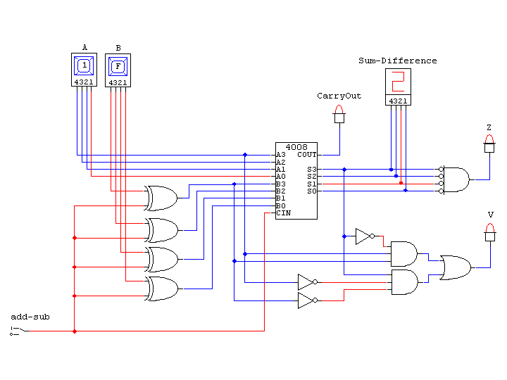
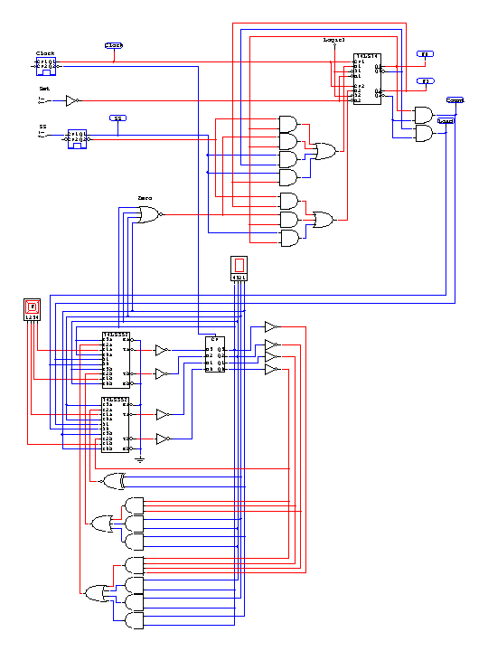

This assignment is due by midnight, March 1. Submit it by sending email to me at the address, vickery@babbage.cs.qc.edu. Be sure to put "CS-343 Assignment 3" in the subject of your email and to put your name/ID in the message body.
For this assignment, you are going to submit two CircuitMaker circuits. These .ckt files are actually text files that describe the circuit you designed and simulated. You can safely send them as attachments, or even insert them directly into the body of your email message.
Design and simulate a 4-bit parallel adder/subtracter like the one we did in class. Include the logic for generating all four condition code bits (C, V, N, and Z). Use Hex Keys for the A and B input values, and a Hex Display to show the sum/difference. Use a data switch to set the add/subtract control input, and use four logic indicators for the condition code outputs. Verify that your circuit correctly adds and subtracts two's complement numbers and generates the correct condition code values.
You could build a full adder using AND, OR, and Invert gates and make four copies of it for the parallel adder part of you circuit. But you can also use the 4-bit parallel adder function that is available when you browse CircuitMaker's Devices menu (part number 4008), as shown in the diagram below. The problem is that the adder circuit doesn't give you access to the internal carry bits that you need for efficient implementation of the oVerflow condition code bit ( V = C4 ⊕ C3). The solution used below is to make V true if the two values being added are both positive and the result is negative or if the two values being added are negative and the result is positive.
Design and simulate a four-bit timer. There are two buttons on the timer, once called "Set" and the other one called "Start-Stop (S-S)." The timer also has a mechanism for supplying a four-bit value that will determine how long the timer runs, a seven-segment display to show the current value in the timer, and a "Finished" light to indicate when the timer has finished running.
The timer operates as follows: The user enters the time interval using a hex key. When the user clicks the Set button, the value of the hex key is loaded into a four-bit register. When the user then clicks the Start-Stop (S-S) button, the register counts backwards until it gets to zero. If the user clicks the S-S button while the counter is running, it pauses until the S-S button is clicked again. When the counter gets to zero, the Finished light turns on until the Set button is clicked again.
There are several ways the timer could be designed. You are to do the design as a set of four state machines that interact with each other. One state machine acts as the timer's controller, and the other three implement the datapath for the timer.
The controller state machine responds to clicks of the Set and S-S buttons and to a feedback output of the datapath named "Zero" to move among four states. The state names are Start, Run, Pause, and Done. Clicking the Set button at any time puts the timer in the Start state. In the Start state, clicking the S-S button takes the timer into the Run state. Clicking the S-S button in the Run state puts the timer into the Paused state, and Clicking the S-S button in the Paused state puts the timer back into the Run state. The timer goes into the Finished state when the counter goes to zero in the Run state.
The controller's job is to manage the operation of the datapath of the timer, which is to be implemented by three different state machines that operate on the four-bit counter. One state machine is a "do-nothing" machine that simply preserves the current state of the counter. A second state machine takes the counter into a state that matches the values of the Hex key from any other state. The third state machine causes the counter to count backwards from whatever state it is in to the numerically next smaller numbered state. The three state machines are to be implemented separately and their "next state" signals are to be connected to the counter's flip-flop's D inputs through 4x1 multiplexers. All four multiplexers are to be controlled by two bits named "Load" and "Count," which are the outputs of the controller state machine.
There is to be an output of the datapath named "Zero" that is true when the counter value is zero. The controller state machine is to use Zero as a third input (in addition to S-S and Set) to tell when to go into the Finished state.
Although your assignment is to submit a CircuitMaker simulation of the timer, a complete solution requires you to show the state diagrams and state tables for the entire design. However, you do not have to submit these parts of the assignment.
Note that the outputs depend on the present state, not the next state.
Also, note that the table has been reduced from 32 to 16 rows by eliminating the Set input from the design. A common feature of many types of flip-flop is a separate "asynchronous reset" input that puts the flip-flop in the zero state regardless of the settings of Clock and D. So by using this type of flip-flop (part number ### in CircuitMaker) and connecting their asynchronous reset inputs to the Set button, the inputs to the design reduce to just to just the present states of the two flip-flops, the SS button and the "Zero" feedback input.
This design does not introduce any "don't cares" into the state table. While the circuit might minimize a bit more if we used those, it seems a little less confusing without them.
| Present State | Inputs | Next State | Outputs | ||||
|---|---|---|---|---|---|---|---|
| F1 | F0 | S-S | Zero | F1 | F0 | Load | Count |
| 0 | 0 | 0 | 0 | 0 | 0 | 1 | 0 |
| 0 | 0 | 0 | 1 | 0 | 0 | 1 | 0 |
| 0 | 0 | 1 | 0 | 0 | 1 | 1 | 0 |
| 0 | 0 | 1 | 1 | 0 | 1 | 1 | 0 |
| 0 | 1 | 0 | 0 | 0 | 1 | 0 | 1 |
| 0 | 1 | 0 | 1 | 1 | 1 | 0 | 1 |
| 0 | 1 | 1 | 0 | 1 | 0 | 0 | 1 |
| 0 | 1 | 1 | 1 | 1 | 1 | 0 | 1 |
| 1 | 0 | 0 | 0 | 1 | 0 | 0 | 0 |
| 1 | 0 | 0 | 1 | 1 | 0 | 0 | 0 |
| 1 | 0 | 1 | 0 | 0 | 1 | 0 | 0 |
| 1 | 0 | 1 | 1 | 0 | 1 | 0 | 0 |
| 1 | 1 | 0 | 0 | 1 | 1 | 0 | 0 |
| 1 | 1 | 0 | 1 | 1 | 1 | 0 | 0 |
| 1 | 1 | 1 | 0 | 1 | 1 | 0 | 0 |
| 1 | 1 | 1 | 1 | 1 | 1 | 0 | 0 |
The Controller occupies the upper part of the circuit diagram below. In that design, the two state flip-flops for the controller, "F1" and "F0," are implemented with a single "74LS74" integrated circuit (IC). This IC has inverted "S" and "R" inputs for asynchronously setting or resetting the flip-flops. The S inputs are tied to Logic 1 because they are never used. The R inputs are connected to the inverted Set input switch. Also, the SS input switch goes through a pulser. The pulser itself has been edited (right click on the device and select "Edit Pulser") to use an "External Trigger." The result is that a single pulse will be generated each time the SS switch goes true. Without this "one-shot" behavior, the controller would go from Start to Run and immediately to Pause and then back and forth between Pause and Run for as long as the SS switch stays on.
The datapath, in the lower part of the circuit diagram below, consists of 4 D flip-flops that each have a 4x1 multiplexer connected to their inputs. When the controller is in the Start state, the value in the hex key is loaded into the flip-flops through the "1" inputs of the multiplexers. When the controller is in the Run state, the flip-flops operate as a down-counter, with their inputs coming through the "2" inputs of the multiplexers. In the other two states, the flip-flops do nothing, and their inputs come from their own present state values through the "0" inputs of the multiplexers. (The flip-flops also do nothing by reloading their present states if the "3" inputs to the multiplexers are ever selected somehow.) The multiplexers are implemented using two "74LS352" ICs, each of which supplies two 4x1 multiplexers. These ICs also have a negated Enable input for each multiplexer, and all these Enable inputs are connected to ground (logic 0) so that the multiplexers are always enabled. When all four flip-flops are off, a 4-input NOR gate generates the "Zero" feedback signal for the controller.
| Present State | Next State | ||||||
|---|---|---|---|---|---|---|---|
| S3 | S2 | S1 | S0 | S3 | S2 | S1 | S0 |
| 0 | 0 | 0 | 0 | 1 | 1 | 1 | 1 |
| 0 | 0 | 0 | 1 | 0 | 0 | 0 | 0 |
| 0 | 0 | 1 | 0 | 0 | 0 | 0 | 1 |
| 0 | 0 | 1 | 1 | 0 | 0 | 1 | 0 |
| 0 | 1 | 0 | 0 | 0 | 0 | 1 | 1 |
| 0 | 1 | 0 | 1 | 0 | 1 | 0 | 0 |
| 0 | 1 | 1 | 0 | 0 | 1 | 0 | 1 |
| 0 | 1 | 1 | 1 | 0 | 1 | 1 | 0 |
| 1 | 0 | 0 | 0 | 0 | 1 | 1 | 1 |
| 1 | 0 | 0 | 1 | 1 | 0 | 0 | 0 |
| 1 | 0 | 1 | 0 | 1 | 0 | 0 | 1 |
| 1 | 0 | 1 | 1 | 1 | 0 | 1 | 0 |
| 1 | 1 | 0 | 0 | 1 | 0 | 1 | 1 |
| 1 | 1 | 0 | 1 | 1 | 1 | 0 | 0 |
| 1 | 1 | 1 | 0 | 1 | 1 | 0 | 1 |
| 1 | 1 | 1 | 1 | 1 | 1 | 1 | 0 |
The input to S0 reduces simply to the inverse of itself, and it is implemented using a single wire. The Karnaugh Maps for the other three flip-flop inputs are given below, and their implementations are given in the very bottom of the circuit diagram.
The student version of CircuitMaker available to you has a limit of 50 devices per circuit, and this design comes close to the limit. Each switch, pulser, gate, IC, etc. counts as one device, so there is no choice but to use IC packages wherever possible to combine gates and thus reduce the number of separate devices. The design shown does, however, include six "test points" (the oval boxes attached to the clock, SS, F1, F0, Load, and Count wires). They allow you to see a trace of the circuit in action if you press F12 or click the "trace waveforms" button on the toolbar.
